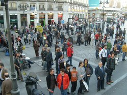
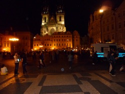

A guide to Europe's most popular cities - and a few less popular ones!
, Torre Agbar (Barcelona), astronomical clock (Prague), The Shard (London), Place de la Republique (Paris), The Broken Chair (Geneva), Little Mermaid (Copenhagen)")
Visiting Europe: Where To Go, What To See

SICILY. Despite its unsavoury past, Sicily is a safer place for tourists than many other European cities. More here.
Experienced travellers will tell you that the weeks you spend planning your coming holiday trip could sometimes be even more exciting (and rewarding!) than the trip itself. My aim here is to give the practical information that tourists on a very short stay need to know. You can easily find all the historical details you need from guidebooks or Wikipedia but if you are on an European tour and have only one or two days to spend in each of the cities then you will need to know which are the most important landmarks to visit as you cannot possibly visit them all. The must-see, must-do activities are highlighted here. Hopefully you will find these pages useful in this respect.
Also the principal cities of interest in Europe are really very close to each other. You certainly do not want to look silly when you return home and be told "Oh, you should have gone to (such-and-such a city) from there even if it is just for a night!" simply because you did not have the necessary information on how close it is and how easy it is to hop over. That would be a real shame indeed. I am sure these pages will be of great help to you in planning your European tour.
 MALTA, Blue Lagoon |
 VENICE, St Mark's Square |
 MADRID, Puerta del Sol |
Thus if you are in Paris in summer you could take the night train for the French Riviera (sleeping on the night train is not travel time wasted, you will agree). Unless you are a jet-setter - in which case just replace the train by the plane.
But if the glamorous cities like Cannes, Nice and Monaco is not your cup of tea how about the more historical city of Rome? Or the romantic city of Venise? Both are also just a night train's journey from Paris. And in one sweep you would have covered both France and Italy!
I could go on and on. Taking the night train from Paris to Barcelona or Madrid, for that matter. So that's France and Spain for you without too much effort. And what about Athens and Prague? They're not too far away neither once you are in Paris (which I assume every tourist to Europe will make a point of stopping!) With low-cost flights charging 30 euros or less (that is, if you book a few months in advance), flying from one major city in Europe to another nowadays is not much more expensive than travelling by train. And besides, it only takes 2-3 hours of flying time from Paris to most of the top European cities mentioned here. So if you have come from far to Europe, you might as well make the most of it and not just confine yourself to one or two cities, right?
 BARCELONA, Las Arenas |
 LONDON, Tower Bridge |
 ROME, railway terminal |
And as planning your holidays in advance is such an exciting game, I'll continue. Once in Madrid, and after having seen all of it (or the must-see places anyway), how about a train ride of just half an hour to the historic town of Toledo or if you are in Rome, how about continuing (without too much cost or time) on to Naples, Pompeii and the Capri islands?
But I'll be discussing all these travel possibilities in much more detail when I touch on each of the top European cities separately here. Talking about "killing two birds with one stone" (and why not three?)
 AMSTERDAM, canal at doorstep |
 PARIS, Pompidou Centre |
 GENEVA, The Broken Chair |
There are also tips here on finding your way around in each city - especially upon your arrival at the railway station or airport. For travellers on a low budget there are suggestions on how to get by with the minimum amount of spending. Remember that if you are prepared to hunt around for tips and read visitors' accounts in travel forums you will often be able to find really cheap places to stay or travel around cheaply or eat in economic restaurants even in expensive cities like London, Paris or Venice.
 COPENHAGEN, Christiania |
 OSLO, Fjord Cruise |
 CANNES, La Croisette |
 CORDOBA, S. Iglesia Cathedral |
 ATHENS, Parthenon |
 PRAGUE, Old Town Square |
 DUBLIN, Temple Bar |  LISBON, Rooster as emblem |  MILAN, gateway to Expo 2015 |
 BERLIN, Dome of Reichstag bldg. |
 LA ROCHELLE, Port Minimes beach |
 KRAKOW, Wawel Royal Castle |
 BRUGES, Venice of the North |
 BRUSSELS, the Whirling Ear |
 OSTEND, the floral clock |
 BUDAPEST, Szechenyi baths |
 MALTA, the Blue Lagoon |
|
Day trips that can be made from the above European cities (click for details): Naples | Capri Island | Pompeii | Brighton | La Rochelle | Ile de Ré | Toledo | Volendam | Malmo | Nice | Monaco | Malaga | Sevilla | Granada | Rouen | Kent |
| Good to know: 112 is the common emergency telephone number for the whole of Europe. You can dial the number free of charge from any telephone in any country in Europe. With that single number you'll be able to contact the police, fire department or medical services. |
Visiting China
Visiting Malaysia
Visiting Morocco